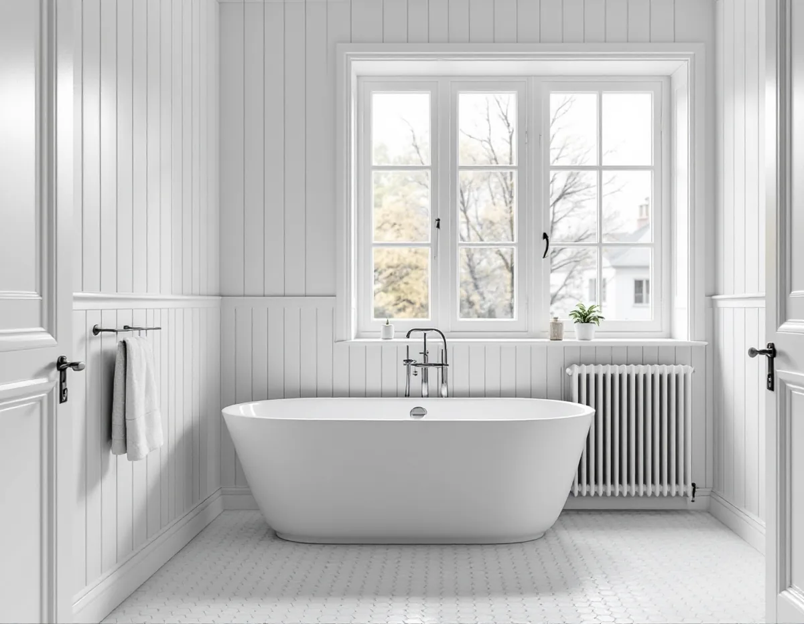
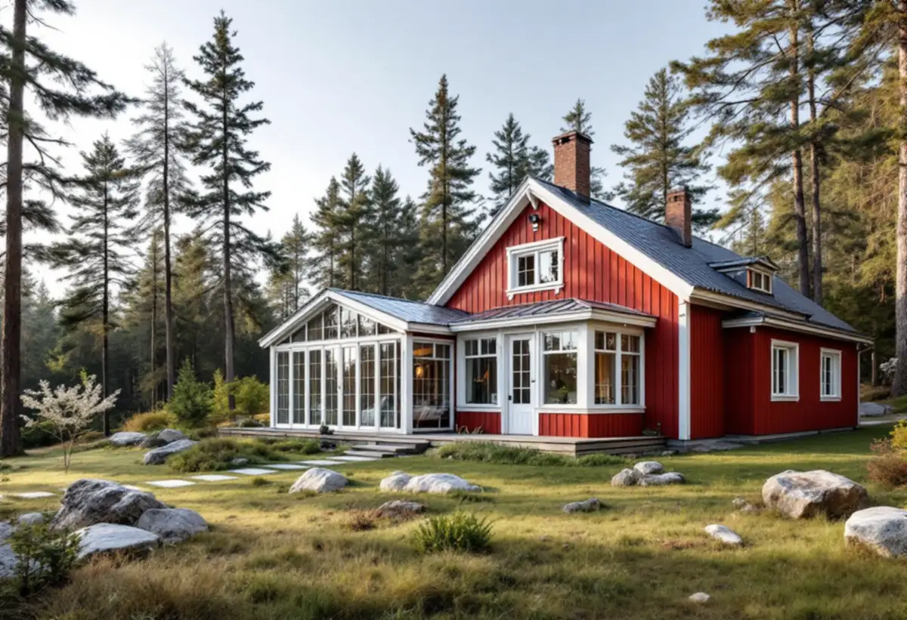

Besök på plats
Vi ser rummet, stommen och var stammar och frånluft går.
En badrumsrenovering i Nacka kan gälla en villa från 1890-talet i Saltsjöbaden, ett sommarhus i Boo som blivit åretruntbostad eller ett radhus i Älta från slutet av 60-talet. Vi river, bygger upp underlag och tätskikt och samordnar VVS och el – och tar reda på om kommunen ska ha en anmälan först.

Nackas kulturmiljöprogram beskriver två rötter. Saltsjöbaden anlades som bad- och villastad i början av 1890-talet, och 1896 stod ett sextiotal villor klara. Längs Saltsjöbanan följde Neglinge, byggt i huvudsak 1895–1910, Storängen, som grundades 1904 av en egnahemsförening, och Saltsjö-Duvnäs 1907.
Vid farleden i Boo byggdes sommarvillor från 1860-talet, och i skogsbackarna bakom kom enklare sportstugor. Från 1930-talet styckades Sommarbo för små fritidshus, ett område där allt fler i dag bor året runt. I Älta stod det första radhusområdet, 25 hus söder om Erstaviksvägen, klart 1968–69.
Det ger tre typer av badrum. I sekelskiftesvillan har badrummet byggts in i ett hus som inte var ritat för det. I sommarhuset har det ofta tillkommit när huset permanentades, ibland i en tillbyggnad. I radhuset finns originalbadrummet kvar om ingen har rört det.

På sin sida om ändring i bärande konstruktioner eller större ändring av planlösning ger Nacka kommun flytt av ett badrum som exempel på en sådan ändring. Den ska anmälas, och precis som vid ett bygglov behövs ett startbesked innan arbetet börjar. Kommunen skickar en bekräftelse med handläggarens namn ungefär tio dagar efter att anmälan kommit in. Syftet är enligt kommunen att säkerställa att samhällets krav på bland annat brandsäkerhet, konstruktion och tillgänglighet uppfylls, och byggnaden får inte tas i bruk förrän det finns ett slutbesked.
Ett badrum som renoveras på samma plats är en annan sak. Om ett stambyte görs i befintligt VA-schakt räknar kommunen det som underhåll som inte behöver anmälas. Läggs nya stammar i nya lägen som kan påverka bärande konstruktion ska det däremot anmälas, och kommunen påpekar att en detaljplan kan innehålla krav på anmälan även för underhåll.
Ventilationen följer samma logik. Installeras ett nytt system eller byts aggregat, fläkt, kanaler eller värmeväxlare på ett sätt som påverkar flöden eller luftkvalitet ska det anmälas, och anläggningen får inte användas förrän det finns ett slutbesked.
Ett badrum i ett hus som byggdes för sommarbruk behöver tåla vinter. Golv och väggar i en gammal stuga kan vara kalla och dåligt isolerade, och ett våtrum med tätskikt mot en kall vägg riskerar kondens. Vi börjar därför med att se hur väggar och golv är byggda och om de behöver isoleras eller byggas om innan tätskikt och skivor sätts upp.
Ligger badrummet i en senare tillbyggnad måste skarven mot den gamla stommen vara tät, och avloppet dras med rätt fall. Kontrollera också om huset har kommunalt vatten och avlopp eller en egen anläggning – det avgör vad ett nytt badrum får kopplas till.
Kulturmiljöprogrammet för sommarnöjena beskriver hur schweizer- och cottagevillornas plåttak ersattes av tegel runt sekelskiftet 1900, och husen har ofta långa, utskjutande taksprång. Ska frånluften från ett nytt badrum ut genom taket på ett sådant hus bör huven placeras så att den inte stör takets uttryck.
Ett radhusbadrum från slutet av 1960-talet har nästan säkert en golvbrunn från byggåret, och enligt GVK ska golvbrunnar från före 1990 bytas vid en påkostad renovering. Väggen mot grannen och de gemensamma ledningarna gör det klokt att prata med grannarna innan du sätter igång.
Mer om tätskikt, fall och papper finns under badrumsrenovering i Stockholm, och om husens tak under takrenovering i Nacka.
Vi ser rummet, stommen och var stammar och frånluft går.
Ska badrummet byta plats eller få nya stammar tar vi fram underlag till kommunen.
Arbete och material står var för sig, så att ROT-avdraget syns.
Rummet rivs, och vi bedömer isolering, underlag och rör i öppet läge.
Underlag, fall, skivor och tätskikt byggs, och installatörerna drar rör och el.
Kakel, klinker och porslin monteras, och du får egenkontroll och skötselråd.
Du får 30 procent av arbetskostnaden i rotavdrag, högst 50 000 kronor per person och år och högst 75 000 kronor sammanlagt med rutavdrag. Vi drar det direkt på fakturan. Material och resor ingår inte.
Ett permanentat sommarhus räknas som småhus, och avdraget gäller om du äger huset och använder det som permanent- eller fritidsbostad. Är huset yngre än fem år får arbetet bara återställa det till ursprungligt skick.
Det som brukar avgöra är om badrummet flyttas, hur väggar och golv i ett äldre hus behöver byggas om och om brunn och stammar ska bytas. Ytskikt och utrustning kommer därefter. Platsbesöket är gratis och du får ett skriftligt kostnadsförslag.
Tätskikt, golvbrunn, el, VVS och intyg.
Badrumsrenovering i Stockholm →Takbyte, takbesiktning och plåtarbeten.
Takläggare i Nacka →Saltsjöbaden, Boo och Älta.
Takrenovering i Nacka →Saltsjöbanan, kommunens mark och kulturkartan.
Attefallshus i Nacka →VA, LTA och dagvatten på tomten.
Byggföretag i Nacka →Uthus, räcken och plåt kring villan.
Fasadmålning i Nacka →Villasamhällena vid Saltsjöbanan.
Fönsterbyte i Nacka →Linoljefärg, väder och verkstad för villafönster.
Fönsterrenovering i Nacka →Slipa och olja trägolvet.
Golvslipning i Nacka →Farledens plåttak och Saltsjöbadens villor.
Plåtslagare i Nacka →Skorsten, huvar och genomföringar vid nytt tak.
Takbyte i Nacka →Ny tapet och dold dekor i äldre villor.
Tapetsering i Nacka →Strandskydd och villasamhällen.
Tillbyggnad i Nacka →Nytt värmesystem när huset ändå görs om.
Totalrenovering i Nacka →